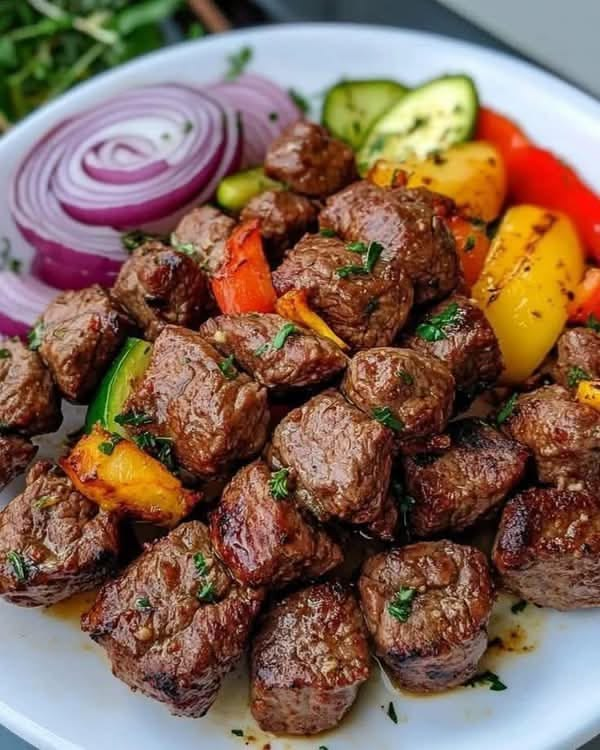

Tibs Recipe

Description
Tibs is a popular Ethiopian dish that consists of sautéed meat, typically beef or lamb, cooked with a variety of vegetables and spices. The meat is usually cut into small cubes and cooked quickly over high heat, resulting in a flavorful and tender dish. The vegetables commonly used in Tibs include onions, bell peppers, tomatoes, and sometimes jalapeños for added heat. The dish is seasoned with a blend of spices such as berbere, garlic, and ginger, giving it a rich and aromatic flavor profile. Tibs can be served as a main course, often accompanied by injera, a traditional Ethiopian flatbread, which is used to scoop up the meat and vegetables.
Ingredients
- 1 lb beef or lamb, cut into small cubes
- 1 large onion, sliced
- 1 bell pepper, sliced
- 2 tomatoes, chopped
- 2 cloves garlic, minced
- 1 tablespoon ginger, minced
- 2 tablespoons berbere spice mix
- 2 tablespoons niter kibbeh (Ethiopian spiced butter) or regular butter
- Salt and pepper to taste
Instructions
- In a large skillet or wok, heat the niter kibbeh or butter over medium-high heat until melted and hot.
- Add the sliced onions and bell peppers to the skillet and sauté for about 5 minutes until they start to soften.
- Add the minced garlic and ginger to the skillet and cook for another 1-2 minutes until fragrant.
- Stir in the berbere spice mix and cook for 1-2 minutes to toast the spices, being careful not to burn them.
- Add the cubed meat to the skillet and cook for about 5-7 minutes, stirring frequently, until the meat is browned on all sides.
- Add the chopped tomatoes to the skillet and cook for another 5 minutes until the tomatoes break down and create a sauce that coats the meat and vegetables.
- Season with salt and pepper to taste. Continue cooking for another 2-3 minutes until everything is well combined and heated through.
- Serve hot with injera or your choice of side.